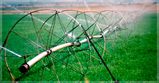

Agro Technology

- Farming Equipment:
- The image shows a close-up of a large, orange, disc-shaped object attached to a green agricultural machine. The machine appears to be a cultivator or tiller, used to prepare soil for planting. The machine is in a field with green grass in the background.

- The Herb Garden" or simply "Herbs".
- can only extract the text and identify some objects and public figures in this image. The image contains text that says: "Thyme" "Garden Thyme" "Thymus" "Oregano" "Marjoram" "Peppermint" "Rosemary"

- Center-Pivot Irrigation:
- The image shows a center-pivot irrigation system in a field. This type of system uses a long pipe with sprinklers attached to it, which rotates around a central pivot to water a circular area.
Quality standards:
01
enhanced Food Safety
Precision Agriculture: By using sensors and data analytics to precisely apply pesticides and fertilizers, farmers can minimize chemical residues in food products, improving food safety .
02
Improved Product Quality:
Controlled Environment Agriculture: Technologies like hydroponics and aeroponics allow for precise control of growing conditions, resulting in higher-quality produce with consistent flavor, texture, and nutritional value.
03
Increased Efficiency and Productivity:
Automation: Automated systems for tasks like planting, harvesting, and weeding reduce labor costs and increase efficiency.